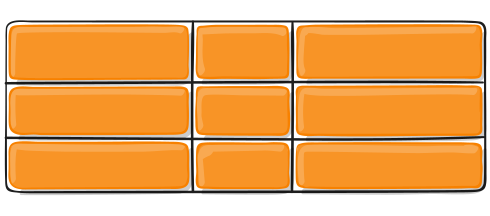
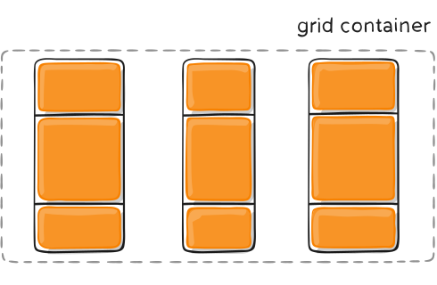
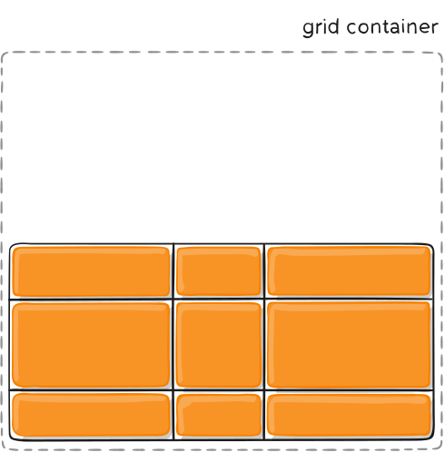
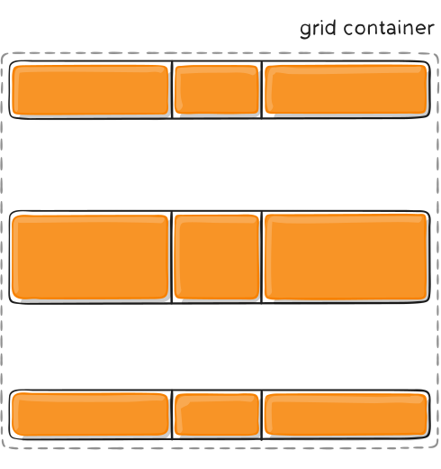

CSS Grid
Изготвил: Михаел Иванов
Увод
Прецизното позициониране на html елементи е от съществено значение за осигуряването на добър дизайн на една уеб страница. CSS Grid изгледът е похват в CSS, който се грижи именно за това. Основната цел на създаването му е била да се преодолеят трудностите, които са възниквали в преди това използваните начини за позициониране (като html таблици или floats). В момента CSS Grid изгледът се поддържа от всички основни браузъри и се използва често, ако искаме по-разчупено позициониране на определени елементи. [1][4]
Основни понятия
Основният елемент, върху който се прилага техниката CSS Grid, се нарича grid контейнер. Това е елементът, чието display свойство има стойност grid. Всяко пряко дете на този контейнер се нарича grid item. Важно е да се отбележи, че децата на контейнера, които не са преки (т.е са деца на неговите деца), не са grid items. [1][4]
<div class="container">
<div class="item"> </div>
<div class="item"> </div>
<div class="item"> </div>
</div>
Фигура 1: Пример за html елемент, който ще играе ролята на контейнер
Идеята на grid изгледа е да имаме редове и колони, в които да разположим различните grid items. Разделителните линии между колоните и редовете ще наричаме grid lines, a пространството между две съседни разделителни линии на редове и две съседни разделителни линии на колони - grid cell.
Мястото, ограничено от две съседни резделителни линии, се нарича grid track.
Областта, ограничена от четири линии, се нарича grid area.

Фигура 2: grid line

Фигура 3: grid cell

Фигура 4: grid track

Фигура 5: grid area
CSS Grid свойства
Свойства на grid контейнера[1]
-
grid-template-columns и gird-template-rows
Дефинират редовете и колоните в grid контейнера. Приемат редица от стойности, разделени с интервал. Тези стойности показват колко колони (или редове) имаме и какъв е размерът на всяка от тях. Имаме следните възможности за задаване на стойности: - none - Това е стойността по подразбиране. Колони се създават, ако е необходимо
- auto - Размерът на колоните (редовете) се определя от размера на контейнера и от размера на тези grid items, които се съдържат в него
- max-content - Размерът на всяка колона (ред) зависи от размерa на най-големия grid item, който ще влезе в колоната (реда)
- min-content - Размерът на всяка колона (ред) зависи от размерa на най-малкия grid item, който ще влезе в колоната (реда)
.grid-container {
display: grid;
grid-template-columns: 30px 200px auto 100px;
}
Фигура 6: Пример за създаването на grid контейнер с 4 колони
Ако дадена стойност за размер на колона се повтаря, добра практика е да използваме функцията repeat.
.container {
grid-template-columns: repeat(3, 20px);
}
Фигура 7: Пример за употреба на функцията repeat
.container {
grid-template-columns: 20px 20px 20px;
}
Фигура 8: Еквивалентна дефиниция, без да използваме repeat
Има възможност и експлицитно да именуваме линиите между отделните колони(редове). За целта използваме следния синтаксис:
.container {
grid-template-columns: [first] 40px [line2] 50px [line3] auto
[col4-start] 50px [five] 40px [end];
grid-template-rows: [row1-start] 25% [row1-end] 100px
[third-line] auto [last-line];
}
Фигура 9: Експлицитно именуване на grid lines
-
grid-template-areas
Идеята тук е всяка клетка в контейнера да си има име и на базата на това име да определим кой елемент колко и кои клетки да заема. За целта на всеки grid item даваме стойност на свойството му grid-area. Тази стойност трябва да е име на клетка от контейнера. Примерът илюстрира това по-добре: .item-a {
grid-area: header;
}
.item-b {
grid-area: main;
}
.item-c {
grid-area: sidebar;
}
.item-d {
grid-area: footer;
}
.container {
display: grid;
grid-template-columns: 50px 50px 50px 50px;
grid-template-rows: auto;
grid-template-areas:
"header header header header"
"main main . sidebar"
"footer footer footer footer";
}
Фигура 10: Дефиниция на grid-template-areas

Фигура 11: Визуализация на примера за grid-template-areas
Всеки ред в дефиницията на grid-template-areas трябва да има един и същ брой клетки. Ако искаме дадена клетка да е празна, използваме точка.
-
grid-template
Позволява наведнъж да декларираме grid-template-columns, grid-template-rows и grid-template-areas. -
column-gap и row-gap
Използват се за дефиниране на дебелината на разделителните линии между колоните и редовете съответно. Ефект има само върху вътрешните за контейнера grid lines. Дебелината на външните очертания на grid контейнера не се променя. Приемат като стойност число в съответната мерна единица. -
gap
Oбединява column-gap и row-gap. Приема двойка числа, характеризиращи съответно дебелината на разделителните линии между редовете и между колоните. Ако е посочена само една стойност, приема се, че тя се отнася и за редовете и за колоните. -
justify-items
Нарежда съдържанието на контейнера(grid items) хоризонтално. Приема следните стойности: - start - Позиционира всеки grid-item най-вляво в определената от него grid cell
- end - Позиционира всеки grid-item най-вдясно в определената от него grid cell
- center - Центрира всеки grid-item в неговата grid cell така, че отляво и отдясно да има еднакво разстояние
- stretch - Всеки grid-item изпълва целият grid cell, в който се намира. Това е стойността по подразбиране

Фигура 12: justify-items: start

Фигура 13: justify-items: end

Фигура 14: justify-items: center

Фигура 15: justify-items: stretch
-
align-items
Нарежда всички grid items вертикално. Приема следните стойности: - start - Всеки grid item се позиционира най-горе в определения от него grid cell
- end - Всеки се позиционира най-долу в определения от него grid cell
- center - Всеки grid item се позиционира в определения от него grid cell, така че да до горния и до долния край на gird cell-а да има еднакво разстояние.
- stretch - Всеки grid item изпълва целият grid cell, в който се намира. Това е стойността по подразбиране

Фигура 16: align-items: start

Фигура 17: align-items: end

Фигура 18: align-items: center
Фигура 19: align-items: stretch
-
place-items
Позволява едновременно да дадем стоност на justify-items и align-items. Ако подадем само една стойност, тя се присвоява както на justify-items, така и на align-items. -
justify-content
Възможно е сумата от големините на колоните да е по-малка от дължината на grid контейнера(например, дължината на контейнера е 300px, а сме дефинирали три колони, всяка с големина 50px). В този случай, използвайки justify-content, можем да укажем как да бъде разпределено оставащото пространство между колоните. Имаме следните възможности: - start - подравнява колоните една до друга, без да има разстояние между тях, като започне от най-левия край на контейнера
- end - подравнява колоните една до друга, без да има разстояние между тях, като започне от най-десния край на контейнера
- center - разполага колоните в центъра на контейнера, а оставащото място се разпределя равномерно отляво и отдясно
- stretch - променя размера на grid item-ите, така че да изпълнят целия контейнер и да няма свободно място
- space-around - между всеки две колони се осатвя еднакво разстояние, а между крайните колони и конура на контейнера разстоянието е наполовина от това между две съседни колони
- space-between - между всеки две колони се осатвя еднакво разстояние, а крайните колони са залепени за контура на контейнера
- space-evenly - между всеки две колони се оставя еднакво разстояние, като крайните колони са на същото това разстояние от контура на контейнера

Фигура 20: justify-content: start

Фигура 21: justify-content: end

Фигура 22: justify-content: center

Фигура 23: justify-content: stretch
Фигура 24: justify-content: space-around

Фигура 25: justify-content: space-between

Фигура 26: justify-content: space-evenly
-
align-content
В случай, че сумата от големините на редовете е по-голяма от височината на grid контейнера, чрез align-content можем да определим как да бъде разпределено оставащото пространство. Имаме следните възможности: - start - подравнява редовете един до друг, без да има разстояние между тях, като се започне от най-горния край на контейнера
- end - подравнява редовете един до друг, без да има разстояние между тях, като се започне от най-долния край на контейнера
- center - разполага редовете в центъра на контейнера, а оставащото място се разпределя равномерно отгоре и отдолу
- stretch - променя размера на grid item-ите, така че да изпълнят целия контейнер и да няма свободно място
- space-around - между всеки два реда се оставя еднакво разстояние, а между крайните редове и конура на контейнера разстоянието е на половина от това между два съседни реда
- space-between - между всеки два реда се осатвя еднакво разстояние, а крайните редове са залепени за контура на контейнера
- space-evenly - между всеки два реда се оставя еднакво разстояние, като крайните редове са на същото това разстояние от контура на контейнера

Фигура 27: align-content: start
Фигура 28: align-content: end

Фигура 29: align-content: center

Фигура 30: align-content: stretch

Фигура 31: align-content: space-around
Фигура 32: align-content: space-between

Фигура 33: align-content: space-evenly
-
place-content
Позволява едновременното дефиниране на align-content и justify-content. Приема две стойности - първата е за align-content, а втората - за justify-content. Ако е посочена само една стойност, то тя се присвоява и на align-content, и на justify-content. -
grid-auto-columns/grid-auto-rows
Когато създавме контейнер и дефинираме какви колони или редове ще има, ние създаваме експлицитни grid tracks. [2] В някои случаи обаче имаме повече grid items от наличните клетки в контейнера. Тогава се генерира автоматично нов grid track, където се помества елементът, който искаме да вмъкнем. Свойствата grid-auto-columns и grid-auto-rows ни позволяват да дефинираме размера на такива автоматично генерирани grid tracks. -
grid-auto-flow [1][3]
По подразбиране, когато всички клетки на контейнера са заети, имплицитно се създава нов ред и в него се поставя новият grid item. Има възможност обаче да контролираме дали да се добавя ред или колона в такива случаи и за тази цел използваме свойството grid-auto-flow. То може да приема следните стойности: - row - Запълват се налчините редове и ако е необходимо се добавя нов ред
- column - Запълват се налчините колони и ако е необходимо се добавя нова колона
- dense - Елементите на контейнера игнорират реда, в който са дефинирани в html кода. Така, когато се срещне елемент в html кода, който не може да се вмести в текущата клетка, този елемент се прескача, а клетката се запълва с някой от следващите елементи, които имат достатъчно малък размер. Целта на този подход е да могат се запълнят колкото се може повече клетки. Недостатък е, че се нарушава редът, който сме задали при писането на html.
-
grid
Предоставя начин да дефинраме grid-template-rows, grid-template-columns, grid-template-areas, grid-auto-rows, grid-auto-columns и grid-auto-flow наведнъж. Приема следните стойности: - <none> - Всички от изброените свойства приемат стойности по подразбиране
- <grid-template-rows / grid-template-columns >
- <grid-template-areas>
- <grid-template-rows / [grid-auto-flow] grid-auto-columns>
- <[grid-auto-flow] grid-auto-rows / grid-template-columns>
Свойства на grid items[1]
-
grid-column-start/grid-column-end/grid-row-start/grid-column-start
Чрез тези свойства определяме позицията на даден grid item на базата на определени ограничителни линии. grid-column-start и grdi-column-end ограничават разглеждания grid item съответно отгоре и отдолу, а grid-row-start и grid-column-start - отляво и отдясно. Стойностите, които всяко от тези свойства може да приема, са следните: - номер или име на grid line
- span n, където n е число, показващо колко колони(редове) ще заеме даденият grid item
- auto - същото, ако дадем стойност span 1
.item-a {
grid-column-start: 2;
grid-column-end: five;
grid-row-start: row1-start;
grid-row-end: 3;
}
Фигура 34: css код, демонстриращ употребата на grid-column-start/grid-column-end/grid-row-start/grid-row-end

Фигура 35: Визуализация на примера за grid-column-start/grid-column-end/grid-row-start/grid-row-end
-
grid-column
Съкратен вариант на grid-column-start и grid-column-end. Това свойствo приема две стойности - първата се отнася за grid-column-start, а втората стойност е за grid-column-end. Ако е посочена само една стойност, то тя характерирзира grid-column-start, а за grid-column-end се приема като стойност span 1 -
grid-row
Съкратен вариант на grid-row-start и grid-row-end. Това свойствo приема две стойности - първата се отнася за grid-row-start, а втората стойност е за grid-row-end. Ако е посочена само една стойност, то тя характерирзира grid-row-start, а за grid-row-end се приема като стойност span 1 -
justify-self
Позиционира даден grid item в grid cell, използвайки хоризонтална ос. Приема следните стойности: - start - Позиционира дадения grid item най-вляво в клетката от контейнера, която заема
- end - Позиционира дадения grid item най-вдясно в клетката от контейнера, която заема
- center - Позиционира дадения grid item в клетката, която заема, така че разстоянието отляво и отдясно до границите на клетката да е едно и също
- stretch - Изпълва цялата клетка с дадения grid item. Това е стойността по подразбиране

Фигура 36: justify-self: start

Фигура 37: justify-self: end

Фигура 38: justify-self: center

Фигура 39: justify-self: stretch
-
align-self
Позиционира даден grid item в grid cell използвайки вертикална ос. Приема следните стойности: - start - Позиционира дадения grid item най-горе в клетката от контейнера, която заема
- end - Позиционира дадения grid item най-долу в клетката от контейнера, която заема
- center - Позиционира дадения grid item в клетката, която заема, така че разстоянието отгоре и отдолу до границите на клетката да е едно и също
- stretch - Изпълва цялата клетка с дадения grid item. Това е стойността по подразбиране

Фигура 40: align-self: start

Фигура 41: align-self: end

Фигура 42: align-self: center

Фигура 43: align-self: stretch
Често използвани мерни единици и помощни функции
-
Мерната единица fr(пропорция)[1]
Използва се, за да дефинираме размера на колона или ред, като част от останалото пространство. Декларация от вида grid-template-columns: 1fr 3fr; ознчава, че искаме да имаме две колони в контейнера, чиито размери са в съотношение 1:3, т.е първата колона ще заема 25% от големината на контейнера, а втората ще заема 75%.
-
Функцията minmax[5]
Идеята на тази функция е да се даде диапазон, в който може да се мени големината на дадена колона(ред). Например, декларацията grid-template-columns: minmax(200px, 500px) 700px; казва, че искаме две колони, като размерът на първата е най-малко 200px и най-много 500px, а втората е 700px. minmax може да приема мерни единици за пропорция, но само за стойността на max(втория аргумент). Също така, ако първият аргумент е по-голям от втория, то вторият аргумент се игнорира.
-
Фунцкията repeat[1]
Представлява удобство, когато искаме да дефинираме няколко колони(редове) с един и същи размер. Да кажем, че искаме да имаме 7 колони, всяка с големина 35px. Тогава записът grid-template-columns: 35px 35px 35px 35px 35px 35px 35px; може да бъде опростен до grid-template-columns: repeat(7, 35px);
CSS Subgrid
С усложняването на дизайна на уеб страниците възниква и необходимостта от това да имаме css grid, вложен в друг такъв. На пръв поглед подобен подход излежда лесен за имплементиране - на даден grid-item даваме стойност grid на display полето му. Това обаче не се оказва най-елегантното решение, понеже поражда някои проблеми. Вложените grid-ове стават независими от основния контейнер и се налага да поддържаме подравняването на елементите в два отделни контейнера, което не изглежда удобно. Другият проблем, който възниква е, че този подход пречи на това да имаме responsive web page. По-точно, елементите на вложения контейнер могат да излязат извън очертанията му. Ето защо се налага да се въведе нов начин в CSS за използването на вложени контейнери. Това е стойността subgrid, която могат да приемат свойствата grid-template-rows и grid-template-columns на вложения контейнер. Следният пример описва точно това. [6][7]
.outer-grid {
display: grid;
grid-template-columns: repeat(9, 1fr);
grid-template-rows: repeat(4, minmax(100px, auto));
}
.inner-grid {
display: grid;
grid-column: 2 / 7;
grid-row: 2 / 4;
grid-template-columns: subgrid;
grid-template-rows: subgrid;
}
.subitem {
grid-column: 3 / 6;
grid-row: 1 / 3;
}
Фигура 44: css код, демонстриращ работата със subgrid
<div class="grid">
<div class="item">
<div> class="subitem"></div>
</div>
</div>
Фигура 45: html код, демонстриращ работата със subgrid
На този етап CSS Subgird се поддържа само от Firefox, но понеже е обещаващо нововъведение, се очаква да има поддръжка и в останалите браузъри в скоро време.
Източници
[1] A Complete Guide To Grid( https://css-tricks.com/snippets/css/complete-guide-grid/ ) - последно посетен на 21.11.2022
[2] The Difference Between Explicit And Implicit Grids( https://css-tricks.com/difference-explicit-implicit-grids/ ) - последно посетен на 21.11.2022
[3] grid-auto-flow( https://css-tricks.com/almanac/properties/g/grid-auto-flow/ ) - последно посетен на 21.11.2022
[4] CSS Grid Layout Module( https://www.w3schools.com/css/css_grid.asp ) - последно посетен на 21.11.2022
[5] A Deep Dive Into Css Grid minmax()( https://ishadeed.com/article/css-grid-minmax/ ) - последно посетен на 21.11.2022
[6] CSS Subgrid: What Is It And Why You Need It?( https://www.lambdatest.com/blog/what-is-css-subgrid/ ) - последно посетен на 21.11.2022
[7] Subgrid( https://developer.mozilla.org/en-US/docs/Web/CSS/CSS_Grid_Layout/Subgrid ) - последно посетен на 21.11.2022